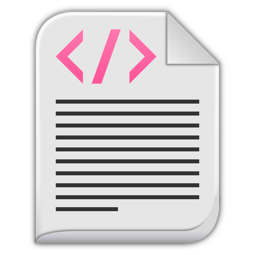

Для возврата к предыдущей странице нажмите на клавиатуре клавишу "Backspace", обозначенную длинной стрелкой, указывающей влево, и находящейся над клавишей "Enter" или нажмите соответствующую кнопку в окне браузера.
кнопка параграфа, позволяющая перейти к соответствующей части курса.
- панель навигации, позволяющая перемещаться по учебному курсу и возвращаться к содержанию.
Ссылки, позволяющие перемещаться к заданному месту, помечаются подчёркнутым текстом.
+ раскрывает подлежащий контент
В тексте присутствуют , на которых написано их же предназначение.


 - панель навигации, позволяющая перемещаться по учебному курсу и возвращаться к содержанию.
- панель навигации, позволяющая перемещаться по учебному курсу и возвращаться к содержанию.